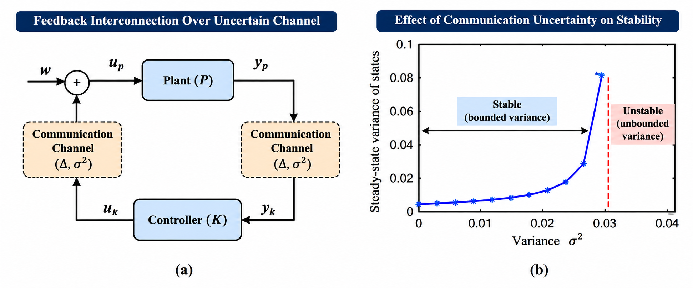
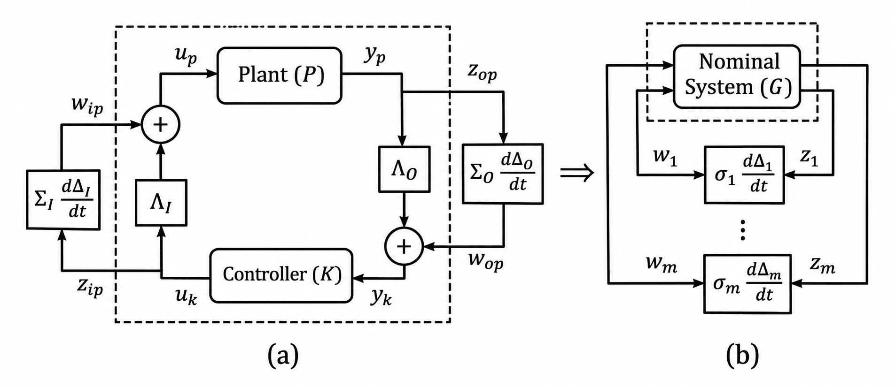
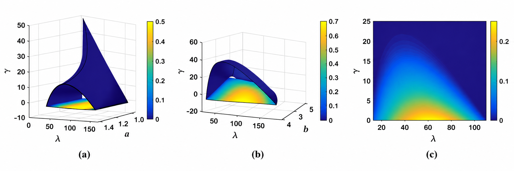
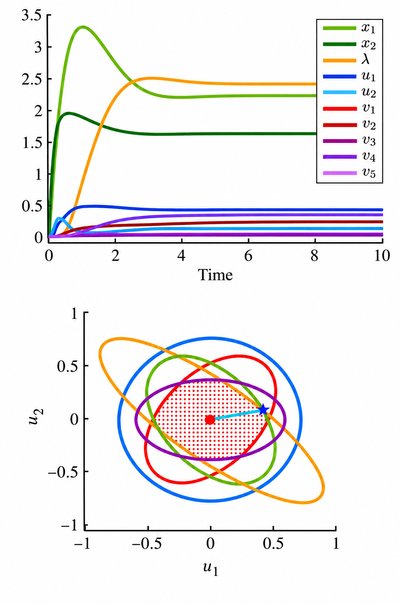
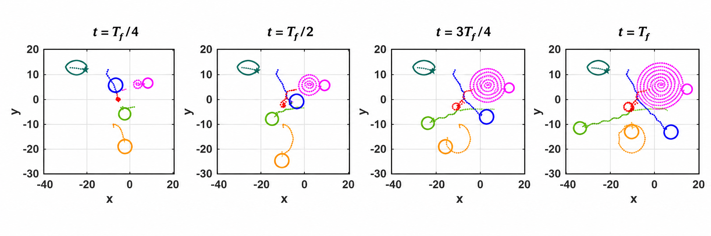

Cyber-Physical Systems: Networked Control, Stability, and Optimization
Fundamental limits of communication-constrained control, synchronization of uncertain networks, robust optimization, and distributed dynamical algorithms.
Cyber-physical systems integrate physical processes, feedback control, computation, and communication networks. The interaction between these components introduces fundamental challenges arising from limited communication bandwidth, stochastic packet losses, uncertain communication channels, and distributed information.
Our research investigates the mathematical foundations of networked dynamical systems, with particular emphasis on the limits of feedback control and estimation over uncertain communication channels, synchronization of interconnected dynamical systems, and robust optimization under uncertainty. We also develop continuous-time dynamical approaches to distributed and constrained optimization, exploiting connections between stability theory, nonlinear dynamics, and optimization algorithms.
Together, these contributions provide a theoretical foundation for understanding how network uncertainty influences stability and performance, and for designing scalable control and optimization methods for interconnected physical systems.
01 / Communication and stability
Fundamental Limits of Networked Control and Estimation
Feedback over a communication network must contend with packet losses, limited information rates, and stochastic variations in transmitted signals. Our work relates the instability of the physical dynamics to the channel reliability required for stabilization and bounded estimation error.
For nonlinear systems, the analysis connects communication limits with positive Lyapunov exponents and measure-theoretic entropy under the assumptions of the corresponding results. This accounts for non-equilibrium behavior beyond local linearization at an equilibrium. For continuous-time linear systems with multiplicative channel uncertainty, mean-square stability admits an input-output small-gain characterization and linear-matrix-inequality computations.
- Necessary communication-quality conditions for nonlinear stabilization and observation over erasure channels.
- Mean-square stability analysis and controller synthesis for stochastic networked systems.
- Critical uncertainty limits determined jointly by plant dynamics and channel assumptions.


Networked Control over Uncertain Input and Output Channels
A multi-input, multi-output feedback interconnection can be expressed as a nominal deterministic system coupled to structured stochastic uncertainty. This representation supports stability analysis and convex computations for control design without treating communication uncertainty as an unstructured disturbance.


02 / Collective dynamics
Synchronization of Uncertain Dynamical Networks
Synchronization depends on the interaction of local nonlinear dynamics, network topology, coupling strength, and stochastic link uncertainty. We derive sufficient conditions that relate these ingredients to the spectral properties of the nominal network Laplacian.
The resulting synchronization margin exposes tradeoffs between connectivity and uncertainty. In the studied nearest-neighbor networks, adding more connections need not improve robustness: the optimal number of neighbors and coupling gain depend on the dynamics and uncertainty statistics.
- Mean-square synchronization conditions for nonlinear networks with uncertain links.
- Size-independent tests for the studied network models.
- Analysis of how Laplacian eigenvalues, coupling, and link uncertainty affect robustness.


03 / Decisions under uncertainty
Robust Control and Optimization Under Uncertainty
Robust optimization seeks decisions that remain feasible and effective across a prescribed uncertainty set. We study these problems through dynamical systems whose states include decision variables, multipliers, and uncertainty-related variables.
Our continuous-time formulation uses saddle-point dynamics rather than the standard gradient of a Lagrangian. Stability analysis connects equilibria of these dynamics to robust solutions for the convex-concave problem class and regularity assumptions considered in the paper. A complementary discrete-time algorithm brings this perspective to iterative computation.
Structured uncertainty sets, including intersections of ellipsoids, provide concrete examples of how uncertainty geometry enters the optimization dynamics. The trajectories illustrate a particular numerical example, rather than a convergence guarantee for arbitrary problems.
- Dynamical formulations that evolve optimization and uncertainty variables together.
- Stability and convergence analysis under explicit problem assumptions.
- Continuous- and discrete-time approaches to robust optimization.


04 / Optimization as dynamics
Distributed Optimization Using Dynamical Systems
Networked agents often need to optimize using local information while constraints and objectives change with time. We investigate continuous-time optimization dynamics and use nonlinear stability tools to study convergence, with distributed and constrained optimization as motivating settings.
Our published time-varying optimization work develops projected primal-dual systems that track optimizer trajectories. Asymptotic and fixed-time results hold under the stated convexity, smoothness, and feasibility assumptions; fixed-time bounds do not depend on initialization. These results are distinct from a blanket convergence guarantee for every distributed network.
- Continuous-time approaches to constrained and time-varying convex optimization.
- Lyapunov-based tracking analysis and fixed-time convergence mechanisms.
- A time-varying extended Fermat-Torricelli example using a sum-of-squared-distances objective.


Selected Publications
Complete bibliographyNetworked Control and Fundamental Communication Limits
Sai Pushpak Nandanoori, Amit Diwadkar, and Umesh Vaidya. Mean Square Stability Analysis of Stochastic Continuous-Time Linear Networked Systems. IEEE Transactions on Automatic Control, 63(12), 4323–4330, 2018.
Amit Diwadkar and Umesh Vaidya. Stabilization of linear time varying systems over uncertain channels. International Journal of Robust and Nonlinear Control, 24(7), 1205–1220, 2014 (first published online in 2012).
Amit Diwadkar and Umesh Vaidya. Limitations for Nonlinear Observation Over Erasure Channel. IEEE Transactions on Automatic Control, 58(2), 454–459, 2013.
Umesh Vaidya and Nicola Elia. Stabilization of nonlinear systems over packet-drop links: Scalar case. Systems & Control Letters, 61(9), 959–966, 2012.
Prashant G. Mehta, Umesh Vaidya, and Andrzej Banaszuk. Markov Chains, Entropy, and Fundamental Limitations in Nonlinear Stabilization. IEEE Transactions on Automatic Control, 53(3), 784–791, 2008.
Synchronization of Uncertain Dynamical Networks
Amit Diwadkar and Umesh Vaidya. Synchronization in large-scale nonlinear network systems with uncertain links. Automatica, 100, 194–199, 2019.
Amit Diwadkar and Umesh Vaidya. Limitations and tradeoffs in synchronization of large-scale networks with uncertain links. Scientific Reports, 6, 21157, 2016.
Robust Optimization and Control
Keivan Ebrahimi, Nicola Elia, and Umesh Vaidya. A Continuous Time Dynamical System Approach for Solving Robust Optimization. European Control Conference (ECC), 1479–1485, 2019.
Keivan Ebrahimi, Umesh Vaidya, and Nicola Elia. Robust Optimization via Discrete-Time Saddle Point Algorithm. IEEE Conference on Decision and Control (CDC), 2473–2478, 2019.
Distributed and Time-Varying Optimization
Rejitha Raveendran, Arun D. Mahindrakar, and Umesh Vaidya. Dynamical System Approach for Time-Varying Constrained Convex Optimization Problems. IEEE Transactions on Automatic Control, 69(6), 3822–3834, 2024 (early access, 2023).
Rejitha Raveendran, Arun D. Mahindrakar, and Umesh Vaidya. Fixed-Time Dynamical System Approach for Solving Time-Varying Convex Optimization Problems. American Control Conference (ACC), 198–203, 2022.